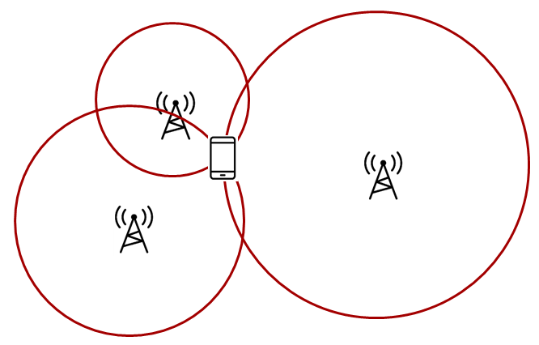
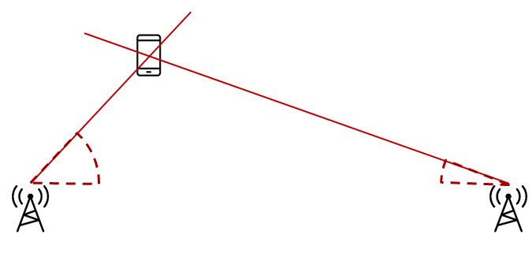
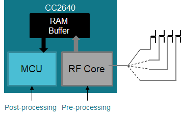
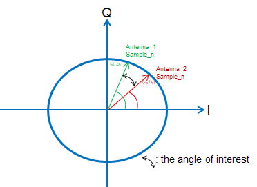
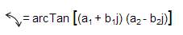
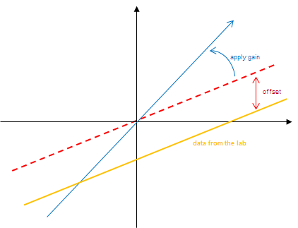
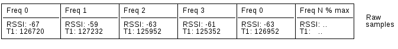

Localization Toolbox¶
The Localization Toolbox, or RTLS Toolbox, is a collection of RTLS (Real Time Locating System) techniques that can be implemented on TI’s standard Bluetooth low energy radios in the CC26xx series. These techniques provide raw data that can be used for locating, tracking, and securely range bounding other Bluetooth nodes.
The inherent flexibility of the CC26xx RF Core is what enables this significant extension of function beyond merely communications, and the main advantages are that customers can start adding RTLS features and security with little or no extra cost, very little additional energy consumption and no increase in peak power.
There are two fundamentally different approaches to location finding:
| Trilateration | Triangulation |

|

|
Trilateration is where you know the distance between a reference node and a target node. This means that the possible locations seen by one locator constitute a circle, so typically three locators are needed to find a single common intersect point. (Assuming a 2D scenario) Angle of Arrival gives you the angle from the receiver to the transmitter. |
Triangulation is where you know the direction from a reference node to a target node. This means that the possible locations seen by one locator constitute a straight line, so two nodes will be enough to determine a single intersect point. (Assuming a 2D scenario) Time of Flight gives you the distance from the receiver to the transmitter. |
Angle of Arrival¶
Angle-of-Arrival (AoA) is a technique for finding the direction that an incoming Bluetooth packet is coming from, creating a basis for triangulation.
An array of antennas with well-defined properties is used, and the receiver will switch quickly between the individual antennas while measuring the phase shift resulting from the small differences in path length to the different antenna.
These path length differences will depend on the direction of the incoming RF waves relative to the antennas in the array. In order to facilitate the phase measurement, the Bluetooth packet must contain a section of continuous tone (CT) where there are no phase shifts caused by modulation.
Note
Future versions of the Bluetooth specification will likely incorporate AoA. In the meantime this is the implementation on the CC2640R2.
BLE Packets¶
In order to get a good estimate of ϕ (phase), all other intentional phase shifts in the signal should be removed. AoA packets (based on the BLE PHY) achieve this by adding a section of consecutive 1’s as part of the PDU, effectively transmitting a single tone at the carrier frequency of 250kHz.

This gives the receiver time to synchronize the demodulator first, and then store I and Q samples from the single tone 250kHz section at the end into a buffer and the buffer can then be post-processed by an AoA application
In TX, the RF Core patch ensures that the tone is inserted in the PDU without being distorted by the whitening filter and without invalidating the CRC.
In RX, the RF Core patch analyzes the packet and starts capturing samples at the right time while synchronizing antenna switching. The samples are left in the RF Core RAM for analysis by the main MCU
Note
The I/Q Data Sample is the coordinates of your signal as seen down the time axis. In fact, I/Q data is merely a translation of amplitude and phase data from a polar coordinate system to a Cartesian (X,Y) coordinate system and using trigonometry, you can convert the polar coordinate sine wave information into Cartesian I/Q sine wave data.
Integration¶
Using a special RF Core patch in receive mode, the I and Q samples from the transmitted 250kHz tone can be captured, pre-processed, and buffered by the RF Core without any load on the main MCU.
Due to the pre-processing, the application can determine the phase shift without having to remove DC offset or IF first, significantly simplifying the estimation process and leaving the application MCU free to do more on top.

The I/Q samples can be captured at a rate of up to 4 MHz and a resolution of 16 bits (32 bits per I/Q data pair) -> 128 bits/μs -> 1kB holds 64 μs and the buffer size can be up to 2kB (128us of 4MS/s data)
The RF Core can provide control signals directly to the antenna switches through CC2640’s IOs, and divides the total capture period into slices for each antenna. The slice length (or antenna dwell time) will determine the accuracy of the phase measurement (default 4us).
Application Example¶
So, how does I/Q samples are used to estimate the angle? Let’s start by assuming that we have an array of 2 antennas.
Antenna Switching¶
When the receiver gets AoA packets, the RF core will trigger an event. This event is routed to a DMA and it will trigger a GPTimer. The GPTimer will then counts down 4us. Once it reaches 4us, it will trigger another event which is route to another DMA channel to start the antenna switching. All of these are done prior to I/Q sampling.
I/Q Sampling¶
Then, the RF core will start sampling the I/Q data at the beginning of the AoA tone (0xFF @ 250KHz) and the sampled data will be stored at the RF RAM.
Function in AOACC26XX.c to extract the data.¶
The I/Q data can be presented into a X-Y domain with real number I and imaginary number Q (90 degree difference). As mentioned before, for each period of 250 kHz signal, we sample 16 I and Q data. If there is no difference, that means that the I/Q data is the same, therefore the phase between ant_1 sample1 will be the same to ant_2 sample1.
Design Considerations¶
Due to the design of the antenna board, there is indeed a phase difference between the antennas. So we extract the phase difference between ant_1 sample[8 to 15] and ant2_sample[8 to 15]. The switch among antennas will cause measurement error, therefore we discard I/Q samples from 0 to 7 when calculating angles.

Here is the code putting I/Q data into 2 dimension and then calculate the angle difference using arctan(Za*complexconjugate(Zb)).
Math for angle calculation.¶
Something to highlight is that in reality the 250kHz might not be perfect (for example, could be 255kHz or 245kHZ), therefore, there is slightly phase difference between ant_1 sample_n and ant_1 sample_(n + 16*1). Therefore compensation should be applied and we use the same method as before:
Compensation method.¶
Because of the none perfect 250kHz tone, the phase difference is aggregated. Let’s say that every period will have 45 degree of delay. Then when comparing ant_1 sample_n and ant_1 sample_(n+16*1), the aggregated phase difference is 90 degree. But the real phase difference between every period is only 45. Therefore the calculated phase difference must be divided by the number of antennas used, in our case 2.
Phase difference.¶
Tuning¶
The antenna pairs and the frequency channel will also affect I/Q data, therefore after antenna_versus_avg is acquired, a final tuning is needed in order to add offsets and change the slope. Those values are calculated based on lab data collection using a turn table where an AoA receiver is on. Then the data is collected when the turn table is set to 90 degree and the calculated angle vs. real angle are compared.

As you can see from the image above, the offset is applied to make sure the data received at 0 degree will derive 0 degree after the calculation and then the slope is changed to make it fit better with all the rest of the angles.
Also depending on the distance and the angle between two antennas, you will need to update the following parameters:
Example of antenna tuning, using boostxl-aoa.¶
Also, keep in mind that the frequency of the tone also plays a part of calculated angle. Therefore a final tuning could be applied here.
Frequency tuning, for antenna 1.¶
Time of Flight¶
ToF is a technique used for secure range bounding by measuring the round trip delay of an RF packet exchange.
This is implemented in a Master-Slave configuration, where the Master sends a challenge and the Slave returns a response after a fixed turn-around time. The Master can then calculate the round trip delay by measuring the time difference between transmission of the challenge and reception of the response, subtracting the (known) fixed turn-around time.
Due to the low-speed nature of a Bluetooth radio when evaluated in a speed-of- light-context, each individual measurement provides only a very coarse result. But by performing many measurements, typically several hundred within a few milliseconds, an average result with much better accuracy can be achieved.
Theory of Operation¶
Few things are faster than the speed of light, and that speed is known and constant at c. Electromagnetic waves propagate at the speed of light, and thus an RF packet propagates at the speed of light.
Since the speed is constant, this means that the time it takes for a wave to propagate is directly proportional to the distance. To find the distance to an object, we can record the timestamp when we transmit something and compare this to when the reflection is received, divide by two and multiply by c. This is the operating principle of for example RADAR as well.
Reflected EM wave. If time between transmit and receive is t, then distance d is simply ct/2.
As opposed to RADAR, the reflector in TI ToF is considered active as it
does not reflect the outgoing signal meaningfully but instead must actively send
out the “reflection”. In this document and our examples, the signal that is sent
out is called a PING and the response is called ACK, or sometimes PONG.
There are at least two main challenges when doing this form of measurement:
- The time the reflector uses between receipt of the
PINGand transmission of thePONGwill affect the measured distance. - Light uses 3.3ns to travel one meter is, which means that the tick speed of a clock measuring the time of flight must apparently be at least 303 MHz to get 1m spatial resolution.
The first challenge is overcome in the TI ToF solution by implementing a deterministic turn-around time in the slave/reflector device.
The frequency of the radio’s demodulator in the ToF configuration is 8 MHz, which means that the temporal resolution is 125 ns. The resolution of the final measurement can be improved by oversampling the individual packet measurements.
Packet format¶
The modulation format is 2Mbps at 250kHz deviation using a piecewise linear shaper for the transitions.
The packets contain a random pre-shared sync word that is unique for each frame sent over the air, and that either side will be listening for in their RX cycle.
The syncword is how the RF circuitry detects that the packet is intended for the device, and also how the timestamps are generated for the measurements. The randomness is important to prevent replay or guess-based attacks.
ToF Protocol¶
From the ToF driver’s perspective there must be at least two devices: A
Master device and a Slave device.
The devices will listen and transmit on a range of frequencies, and using a range of sync-words, both provided by the application.
The slave is initially in RX, or Receive mode, on the first frequency, and
is listening for the first syncword in the array provided by the
application.
If the slave receives a matching packet in the initial listening period it
will send an ACK/PONG and will start following a time-slotted scheme where
it changes frequency and syncwords according to the list provided.
The master will send out a packet containing the first sync-word and some application defined payload. Immediately after this it will go into receive mode and wait for a slave to reply transmitting the second syncword in the array.
Similarly, if the master receives a matching ACK/PONG packet in response
to the initial PING, it will follow the same time-slotted and frequency-
hopping scheme.
![@startuml
participant "Master device" as Master
participant "Slave device" as Slave
== Initial Sync ==
Master -> Slave: Sw<sub>0</sub> Freq<sub>0</sub> PING
activate Master
Master -> Master: Sw<sub>1</sub>
Master -> Master: No Sync
deactivate Master
Slave -> Slave: Enter initial\nRX: Sw<sub>0</sub> + Freq<sub>0</sub>
activate Slave
Master -> Slave: Tx: Sw<sub>0</sub> Freq<sub>0</sub> PING
activate Master
Master -> Master: Sw<sub>1</sub> RX
Slave -> Master: Sw<sub>1</sub> PONG
deactivate Slave
deactivate Master
== Time-slotted ==
note over Master, Slave
From here the devices will go to the next
channel even if no sync is received.
end note
Slave -> Slave: Sw<sub>2</sub> + Freq<sub>1</sub> RX
activate Slave
Master -> Slave: Sw<sub>2</sub> Freq<sub>1</sub> PING
activate Master
Master -> Master: Sw<sub>3</sub> RX
Slave -> Master: Sw<sub>3</sub> Freq<sub>1</sub> PONG
deactivate Slave
deactivate Master
loop
Slave -> Slave: Sw<sub>n</sub> + Freq<sub>m</sub> RX
activate Slave
Master -> Slave: Sw<sub>n</sub> Freq<sub>m</sub> PING
activate Master
Master -> Master: Sw<sub>n+1</sub> RX
Slave -> Master: Sw<sub>n+1</sub> Freq<sub>m</sub> PONG
deactivate Slave
deactivate Master
end
@enduml](../_images/plantuml-fd1ed169f264f08b3d368d7f312261bb2a799bc9.png)
ToF measurement-burst sequence¶
If we consider the timing of the packets, we can try to illustrate the time of flight as the distance between the two first vertical lines below.
You can see that the internal clocks of the two devices are not syncronized, illustrated by the top line for each device, and you can see the three phases of a ToF measurement:
- Master sends PING, Slave receives
- Devices switch RF roles, TX to RX and RX to TX
- Response PONG is sent
ToF Timing diagram. See legend below.
Application¶
The application has to somehow agree with the peer device(s) what frequencies should be used, the order of frequencies, and what the list of syncwords should contain.
In addition, it must call ToF_run(…) at appropriate times to initialize the initial syncword search and the time slotted measurement burst.
This can also be shown as a (very) simplified sequence diagram:
![@startuml
participant Application as app
participant ToF_driver as drv
participant RF_driver as rf
participant Radio as radio
activate app
app -> app : Initialize\nToF_Params
app -> drv : ToF_open(..)
activate drv
drv -> drv : Initialize
drv -> rf : RF_open(..)
drv -> app : ToF_Handle
deactivate drv
deactivate app
...
app -> drv : ToF_run(freqs, ...)
activate drv
drv -> rf : RF_schedCmd
deactivate drv
activate rf
rf -> radio : Load patch
activate radio
rf -> radio : Run command
deactivate rf
radio -> radio : Search for\nsync
radio --> : Sw<sub>0</sub>
radio <-- : Sw<sub>1</sub>
radio -> radio : Loop until finished\nand store timestamps
radio -> rf : Interrupt
deactivate radio
rf -> drv : Callback
drv -> app : Callback
activate app
app -> drv : ToF_getBurstStats(..)
drv -> drv : Calculate stats\nfrom timestamps
drv -> app : ToF_BurstStats
app -> app : Average a bit
[<- app : Display
@enduml](../_images/plantuml-ad0f6a3d84fff5b8cc825b5fbaa09e416638b01d.png)
Application use of ToF¶
Implementation¶
From the application, it is relatively simple. You need to:
- Initialize
- Run
- Collect the results
- Calibrate
Initialize¶
The ToF driver needs a parameter struct with some information filled in. The example has this filled in already, but the most interesting parameters are:
tofRole- Device role: Master/SlavepT1RSSIBuf- Pointer to sample bufferpSyncWords- Pointer to array of syncwordsnumBurstSamples- Number of syncwordsfrequencies- Pointer to array of frequenciesnumFreq- Number of frequenciespfnTofApplicationCB- Callback after run. Function takesuint8_tstatus.
The sample buffer must be at least numBurstSamples / 2 large. The list of
frequencies and the list of syncwords must be identical on both sides.
You must also allocate space for the ToF driver instance, a struct of the type ToF_Struct.
Once that’s done, you can call ToF_Handle handle = TOFCC26XX_open(&tofStruct, &tofParams);
Run¶
When you call TOFCC26XX_run(handle, tofEndTime) it will start immediately.
When combined with Bluetooth, you will get the time in Radio Access Timer
(RAT) ticks from the BLE Stack to use as ToF end-time.
If you are running standalone, an absolute timestamp is still needed, but one
can be finessed by using RF_getCurrentTime() from ti/drivers/RF/h and
adding 4 * <uSec> to that.
Collect the results¶
This is done in the callback function given in the initialization parameters:
ToF_BurstStat tofBurstResults[TOF_MAX_NUM_FREQ] = {0};
void myCallback(uint8_t status) {
TOFCC26XX_getBurstStat(tofHandle, tofBurstResults);
// Do something
}
This function takes the interleaved raw samples and averages them per frequency.
The raw samples are stored in a flat list (above), but the statistics function presents them per frequency:
typedef struct
{
uint16_t freq; // Frequency
double tick; // Time of Flight in clock ticks, averaged over all valid samples for `freq`
double tickVariance; // Variance of the tick values
uint32_t numOk; // Number of packets received OK for `freq`
} ToF_BurstStat;
The tick value can be converted to meters by subtracting the calibrated tick
value at 0 meters and multiplying with 6.25.
The scaling factor is due to the resolution of the radio timer, which is 24 MHz, and the time it takes for light to travel 1 meter two times (back and forth).
Calibrate¶
Due to the deterministic but non-zero turn-around time in the slave, it is necessary to record the average tick value per frequency at a known distance, and then later subtract the calibrated tick values from the measured result and add back the calibration distance.
Interleaving with Bluetooth¶
A Bluetooth LE device in a connection is bound to wake up and transmit or
receive at certain times known as Connection Events. The interval between
such events is called a Connection Interval.
In the time between the end of one connection event and the start of the next scheduled connection event, there is time schedule other RF commands.
The available time can vary, but a timestamp is provided in the connection event complete callback for when Time of Flight has to be finished using the radio.